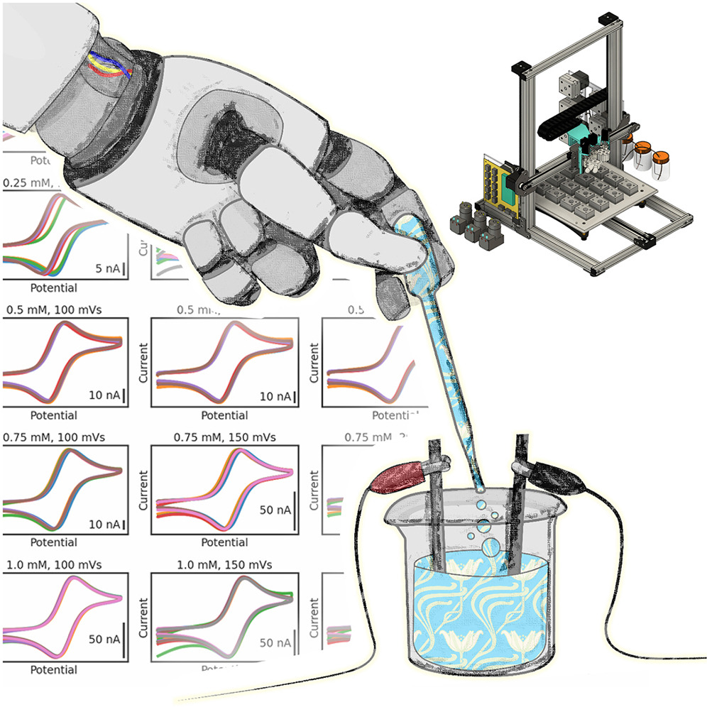
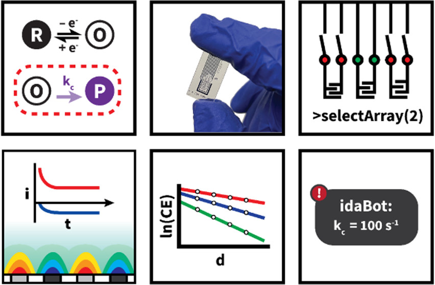

| Oct, 2024 |
One paper got accepted into MEMS 25 !
|
| Mar, 2024 |
I began working jointly with the TI Lab!
|
| Jan, 2024 |
I started learning Chinese.
|
| Jan, 2024 |
I passed the doctoral preliminary exam.
|
| Aug, 2023 |
I started as a Ph.D. student in Lin Lab at UC Berkeley!
|
| Mar, 2023 |
I won the NSF GRFP and the Berkeley Fellowship!
|
Undergraduate Mentoring
-
Kang Wang (02/25 - Current)
The Chinese University of Hong Kong
DNA Origami, Electrochemistry, & Aptamers
-
Sean Ryota Isomatsu (09/24 - Current)
University of California, Berkeley
pMUTs, Ultrasound, & Neuroscience
Fall24 Report
-
Keming Bai (08/24 - Current)
Hebei University of Technology
DNA Origami, Electrochemistry, & Aptamers
Research
I am enjoy working on micro/nanoscience related projects. My research philosopy is to focus on interdisciplinary work that stems chemistry, material science, robotics, physics, and biology.
My work currently spans this and consists of MEMS, medical imaging, self assembled electronics/structures, and nanorobotics. If you are interested in collaboration, feel free to reach out!
|
|

|
The Electrolab: An open-source, modular platform for automated characterization of redox-active electrolytes
Inkyu Oh*, Michael A. Pence*, Nikita G. Lukhanin*, Oliver Rodríguez*, Charles M. Schroeder, Joaquín Rodríguez-López
Cell Devices, 2023
|
|

|
Automated Measurement of Electrogenerated Redox Species Degradation Using Multiplexed Interdigitated Electrode Arrays
Michael A. Pence, Oliver Rodríguez, Nikita G. Lukhanin, Charles M. Schroeder, Joaquín Rodríguez-López
ACS, 2022
|
|
{kind=link}